Dos propuestas para el primer planeta, cada una con su geografía, su fenómeno de sombra y un lugar que sólo aparece cuando la sombra llega. Las cuatro escenas de cada propuesta salen del mismo modelo 3D con cámaras distintas, así que los accidentes del terreno están donde dicen estar en todas.
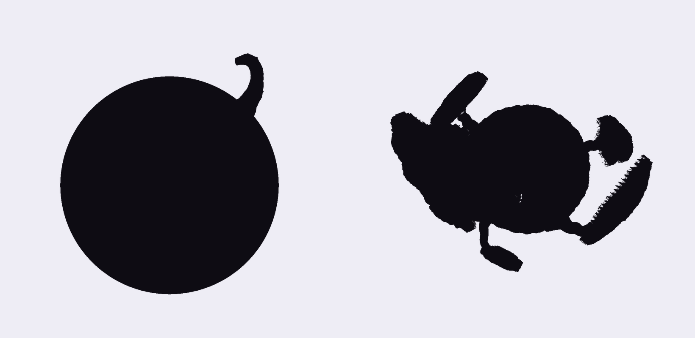
Un planeta casi todo océano, de agua oscura como tinta. Un cráter antiguo quedó sumergido; sólo sobrevive la mitad de su borde. Cuando cae la sombra de la luna, el agua sobre el cráter se suelta del fondo y sube como una lámina que se enciende. Debajo queda al aire un jardín que nadie ha visto.
El agua no sube porque sí: sube donde es profunda, y unos organismos anclados al fondo, las amarras, la sujetan desde abajo. Por eso no se va al espacio, sino que se queda flotando a poca altura, acolchada sobre el jardín como un techo.
Mantengo la premisa entera. Añado una causa: las amarras explican por qué el agua forma una lámina estable en lugar de dispersarse, y convierten el «segundo cielo» en algo con estructura que se puede tocar. Limito la elevación a las aguas profundas, así que el fenómeno siempre revela el mismo lugar y no una superficie cualquiera.
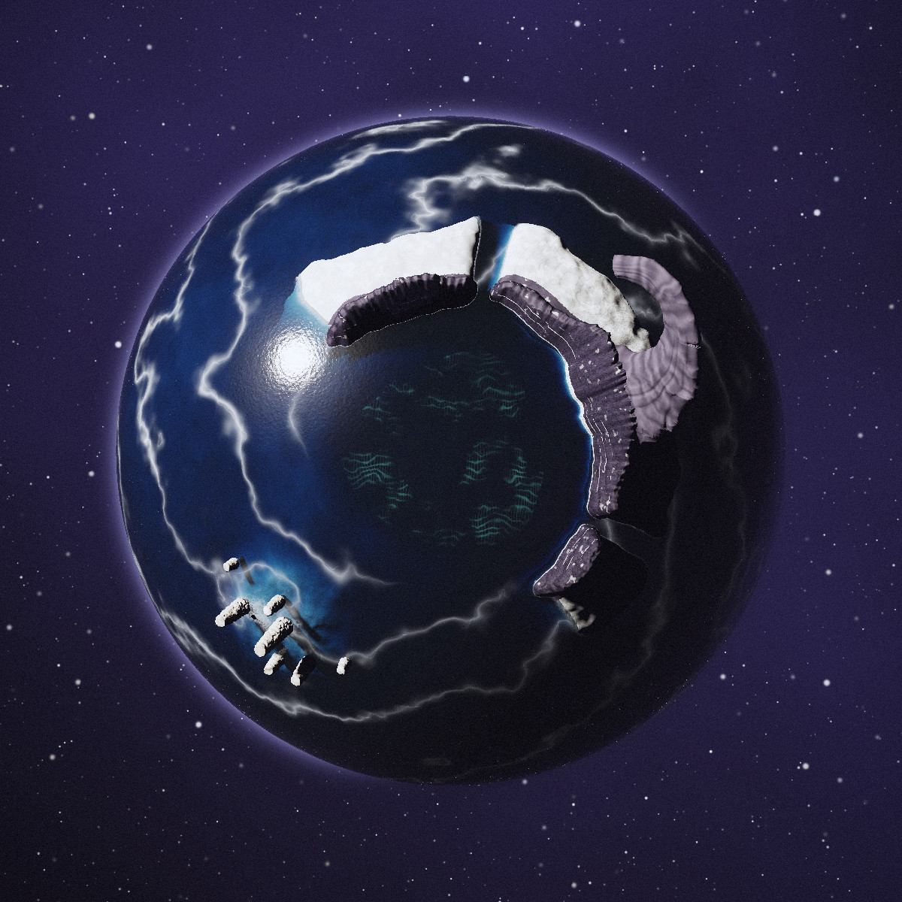
1 2 3 4 5 6En el punto más alto del borde, la roca se volcó hacia dentro. Se levanta 0,6 radios sobre el mar y cuelga sobre la Fosa: es lo que rompe el contorno del planeta desde la órbita. Basalto en lajas. En la sombra no se mueve; la lámina sube por debajo de su punta.
Lo que queda del borde del cráter: un arco de unos 220° al norte y al este, con escarpe interior de basalto columnar y dos brechas. Su cara interior mira a la estrella por la tarde. Fija. Conserva líneas de sal a tres alturas: las marcas de elevaciones anteriores.
Meseta baja detrás de la Cresta, blanca, de costa recortada. Desde la órbita es la mancha clara que acompaña al Gancho. Demasiado somera: el agua aquí no sube.
El fondo del cráter, unos 48° de arco de diámetro y 0,12 radios bajo el nivel del mar. Limo claro cubierto de amarras ancladas con nudos de óxido, salvo un canal de corriente que baja hacia la Sima. Es lo que la sombra descubre.
Un pozo al suroeste del centro, rodeado de terrazas de travertino con pozas. No se vacía: queda una columna de agua que une el fondo con la lámina.
Siete torres de toba en un bajío de sal al suroeste, fuera del cráter. La mayor mide 0,13 radios. Tienen bandas de sal a las mismas alturas que la Cresta. Fijas: son la pista, visible desde la aproximación, de que el mar sube.
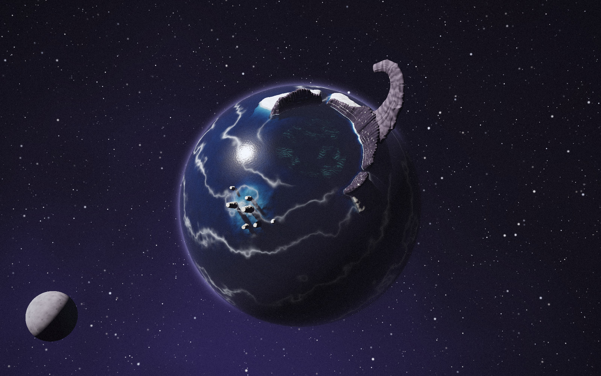
Una esfera de tinta con una sola cosa fuera de sitio: el Gancho, que asoma del contorno como una ola de piedra a punto de romper. Las vetas de espuma giran hacia la Fosa y dibujan una espiral, así que desde lejos ya se intuye que todo el mar apunta a un lugar. La mancha blanca del Salar y el arco de la Cresta bastan para orientarse.
Para comprobar la coherencia: Gancho arriba a la derecha, Cresta en arco, Dientes como puntos blancos abajo a la izquierda, el jardín apenas visible bajo el agua de la Fosa.
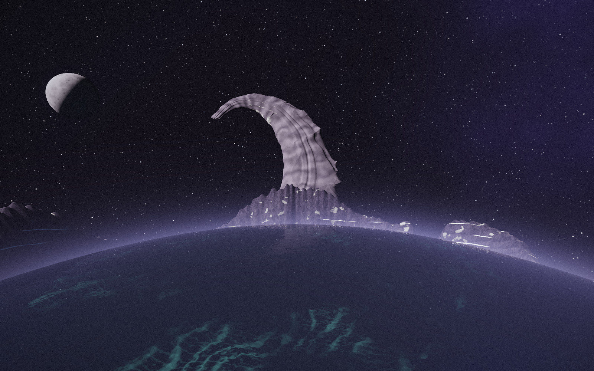
Llegamos desde el suroeste, a baja altura sobre la Fosa, mirando al Gancho. El Gancho es enorme a esta escala: una laja de basalto con estratos, apoyada en una Cresta de columnas. Bajo el agua, a nuestros pies, se adivinan las amarras dormidas como un brillo verde muy tenue. La luna está a un lado: todavía no tapa nada.
Materiales: agua densa y absorbente, espuma de sal, basalto columnar con líneas blancas de marea, sal en la meseta.
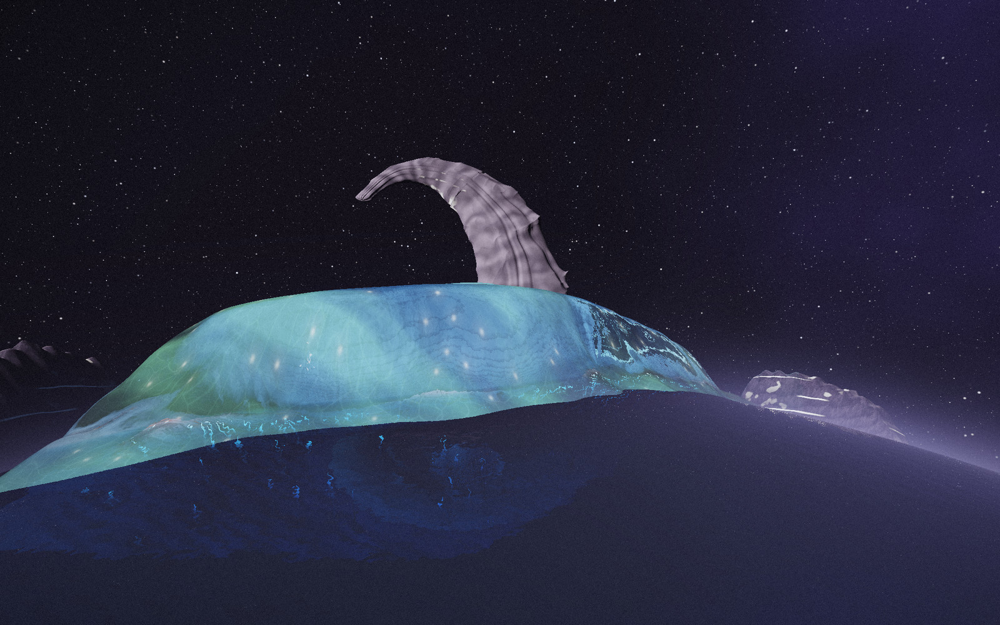
La umbra cae sobre la Fosa y el agua empieza a separarse del lecho. Sube sólo donde el mar es hondo; en los bordes, donde es somera, se queda. El limo cae y la lámina se aclara; el plancton se enciende al agitarse y la lámina brilla desde dentro. Los puntos claros del techo son los anclajes de las amarras, tensas, que tiran de la lámina hacia abajo.
Se mueve: el agua sobre la Fosa. No se mueve: el Gancho, la Cresta, el Salar, los Dientes, el mar somero de alrededor.
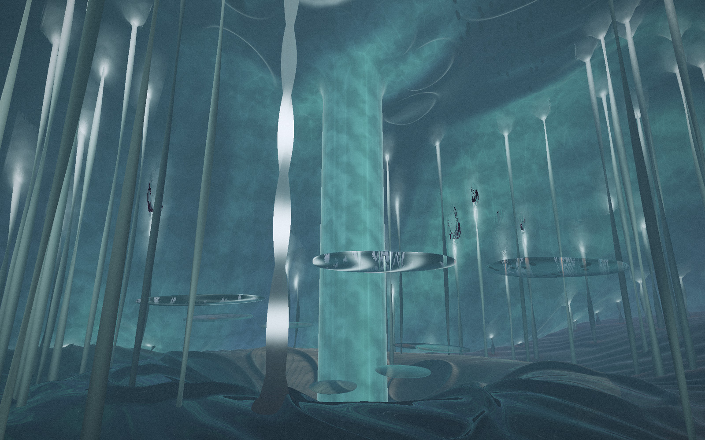
Estamos de pie en el fondo del mar, al aire. Arriba, el agua es un cielo bajo y luminoso; por él pasan las sombras de una raya y de un cardumen. Las amarras suben del limo hasta el techo como hilos tensos. En el centro, la Sima sigue llena: una columna de agua que une suelo y cielo, con lentes de agua flotando sobre las pozas de travertino.
Interacción sugerida: tañer las amarras. Cada una, al tocarla, manda un pulso de luz hacia arriba que se abre en anillos por el techo. La Amarra Madre, trenzada y con un ancla de óxido junto al canal, hace vibrar todo el jardín, y las criaturas del techo bajan a mirar. Una segunda interacción posible: entrar en la columna de la Sima y bajar por ella, el único camino que sigue mojado.
#1c1638mar de tinta#2a2733basalto#e9ececsal y espuma#cfc8bbtoba#a4553fóxido de anclaje#7fe0cfplancton encendido#8a86f0velo violetaIdentidad secundaria del mundo: verde marino frío sobre tinta. El violeta del universo gevorah aparece en la atmósfera y en los velos del techo de agua.
Un cráter es una cuenca: el único sitio del planeta con agua profunda rodeada de tierra. Medio borde roto deja una pared de un lado y mar abierto del otro, así que la Fosa se ve desde la órbita y se puede entrar en ella desde el mar.
La sombra levanta el agua profunda. Sobre la Fosa, el agua queda sujeta por las amarras y forma un techo. Fuera, el mar somero no reacciona. Las marcas de sal en los Dientes y la Cresta avisan antes de que pase.
El visitante lleva la sombra; el planeta decide qué se levanta. El premio es entrar debajo: caminar por el fondo, tañer las amarras, bajar por la Sima. La interacción ocurre dentro del espacio revelado, no en la luna.
Umbral como una planta. Un núcleo pequeño y húmedo, el Sotobosque, sostiene seis islas con tallos fibrosos, como hojas. Por fuera son roca blanqueada por la estrella; por dentro, musgo y farolillos plegados. Con la sombra, las islas se abren hacia fuera como tapas y dejan ver su reverso y lo que guardaban debajo.
Cada isla cuelga de un tallo por su borde, y entre los dos hay un pulvínulo: la articulación hinchada con la que algunas plantas mueven las hojas de noche. En la sombra pierde presión y la isla gira sobre él. Es una bisagra que crece, no un mecanismo.
El planteamiento pedía estructuras que cambian de orientación. Las resuelvo con un modelo botánico real (la nictinastia de la mimosa) en lugar de islas que giran en el aire: el tallo sujeta la isla por un extremo y la articulación explica cómo gira y hasta dónde. Las islas no se voltean del todo; se abren como tapas, y así revelan dos cosas a la vez: su reverso y el hueco del núcleo que tapaban.
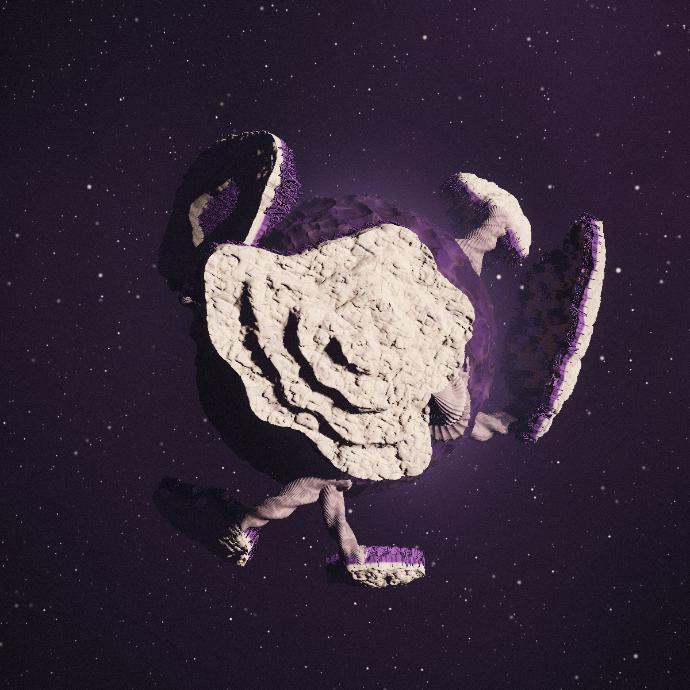
1 2 3 4 5 6La isla mayor, frente a la estrella: cuatro terrazas de roca con grietas y rosetas de liquen. Mide unos 0,8 diámetros del núcleo. Debajo, en el núcleo, está la Umbría: una hondonada que nunca recibe luz. Es la que más gira: hasta unos 86°.
La articulación en su borde este, donde llega el tallo trenzado. Piel más clara con venas. Late con luz violeta mientras gira.
Un anillo al noroeste, sobre el terminador. Por su hueco se ve el núcleo. No gira en este eclipse: la sombra no lo alcanza.
Pequeña y muy abombada, al noreste. La forma más compacta del grupo. Fija en este eclipse.
Dos hojas en un mismo tallo bifurcado, al sur. Se abren a la vez, unos 50°, y quedan cara a cara.
Alargada y nervada, al sureste; la más curvada. Se abre un poco, unos 40°.
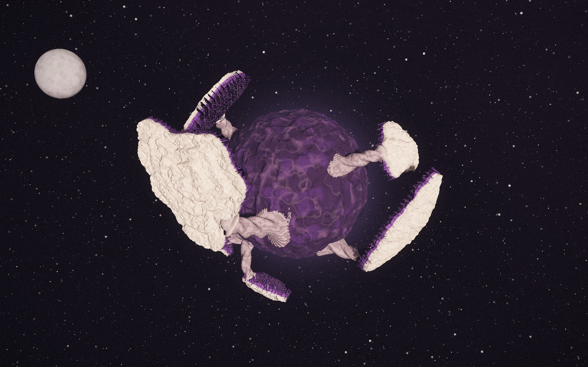
Un núcleo oscuro con islas claras alrededor, como un fruto con brácteas o una flor a medio cerrar. La Meseta domina el lado de la estrella; las demás asoman por el contorno a distintos ángulos y dejan ver un filo violeta: su reverso. Los tallos son lo que distingue esto de un grupo de rocas flotando.
Para comprobar la coherencia: Meseta a la izquierda y delante, Atolón arriba, Copa arriba a la derecha, Concha a la derecha, Gemelas abajo.
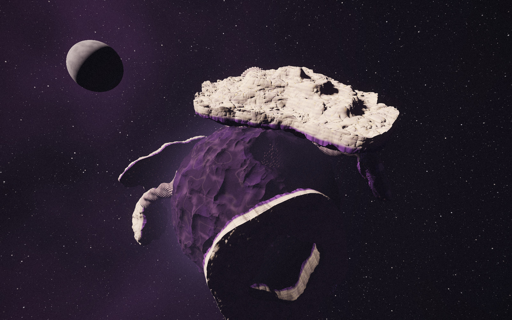
Llegamos por debajo y por fuera de la Meseta. Arriba, sus terrazas blanqueadas; abajo, el Sotobosque, húmedo y violeta. La cara interior de la Meseta sólo se adivina como un filo oscuro: lo que hay ahí no se ve desde ningún punto en el día. A la derecha y abajo, el borde de la Concha.
Materiales: roca calcárea blanqueada con grietas, liquen dorado en rosetas, tallo de fibras trenzadas, humus y musgo en el núcleo.
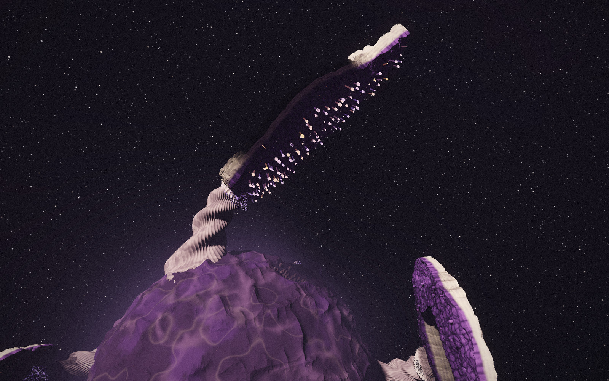
Vista de perfil, mirando a lo largo de la bisagra. La sombra alcanza el pulvínulo; la Meseta gira sobre él unos 43° y se levanta como una tapa. En su reverso, los farolillos empiezan a desplegarse y a encenderse. El tallo se queda donde estaba, curvado por el peso.
Se mueve: las islas que toca la umbra, cada una alrededor de su propia articulación. No se mueve: el núcleo, los tallos y las islas que quedan fuera de la sombra.
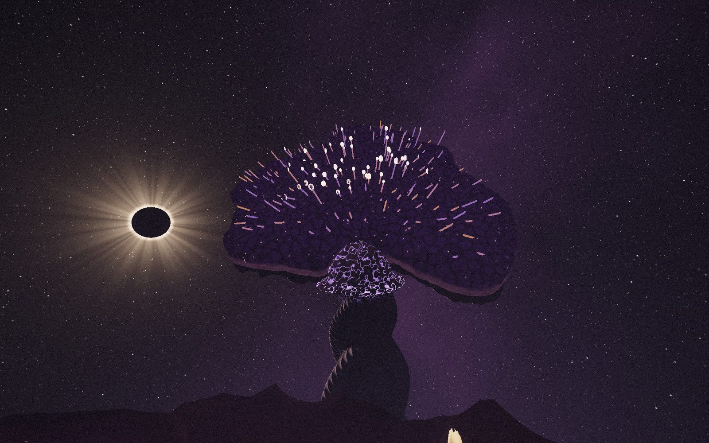
Estamos en la Umbría, la hondonada del núcleo que la Meseta tapaba. Por primera vez se ve el cielo desde aquí: la Meseta abierta casi en vertical, su reverso lleno de farolillos encendidos, y al lado la estrella eclipsada. En el suelo, vainas de semillas que sólo se abren en la oscuridad completa.
Interacción sugerida: abrir las vainas. Al tocarlas sueltan semillas de luz ámbar que suben hacia el reverso de la Meseta y se quedan ahí como farolillos nuevos. Cuando la sombra pasa, la isla se cierra y se los guarda: la próxima vez que se abra, el reverso recordará cada visita.
#cfc4b8roca blanqueada#8f8495roca en sombra#c9b27aliquen#2a1f33humus#5a3d7amusgo del reverso#b08cfffarolillo frío#ffad66semilla ámbarIdentidad secundaria del mundo: hueso y ámbar. El violeta de gevorah es aquí material propio del planeta: el lado vivo.
Un núcleo con islas sujetas por un borde. Cada isla tiene dos caras: la que ve la estrella y la que ve el núcleo. Debajo de cada una hay un hueco que la isla tapa. La Meseta tapa el mayor: la Umbría.
La sombra relaja los pulvínulos. Sólo giran las islas que la umbra toca, cada una sobre su bisagra y en un ángulo propio. Al abrirse muestran el reverso vivo y destapan el núcleo.
Llevar la sombra elige qué isla se abre. Dentro de la Umbría, las vainas responden a la oscuridad total y al tacto. Lo que el visitante suelta se queda en el reverso de la isla.
Las puntuaciones van de 1 a 5 y juzgan el concepto, no la calidad de estos renders, que son estudios de encaje: geometría, luz y materiales resueltos lo justo para leer el mundo.
| Criterio | A · El Mar Suspendido | B · El Archipiélago del Reverso |
|---|---|---|
| 1. Originalidad visual | 4 Un mar que se levanta sobre su propio fondo y se queda sujeto por organismos no tiene un referente claro. El riesgo está en el resplandor turquesa, que se parece a muchos shaders de agua. |
3 Las islas flotantes son un tópico muy gastado. Los tallos y el pulvínulo lo desplazan hacia lo botánico, pero de lejos todavía se lee como «rocas alrededor de una bola». |
| 2. Identidad orbital | 4 Una esfera y una sola protuberancia: se reconoce a cualquier tamaño, incluso como icono. La espiral de espuma añade una segunda lectura sin ensuciar el contorno. |
2 Seis masas a distintos ángulos producen un contorno ruidoso que cambia mucho según la cámara. A tamaño de miniatura cuesta distinguirla de un asteroide. |
| 3. Coherencia geográfica | 4 El Gancho funciona como ancla: aparece en las cuatro escenas y orienta todo lo demás. La escena 04 lo pierde de vista; en el prototipo debería asomar por el techo de agua. |
3,5 La Meseta conecta las cuatro escenas, pero las demás islas sólo se reconocen en la órbita. De cerca, el mundo se reduce a una isla y un tallo. |
| 4. Relación forma y mecánica | 4,5 La forma del terreno decide el fenómeno: sólo una cuenca profunda puede levantar una lámina, y las marcas de sal cuentan la historia antes de que ocurra. |
4 El pulvínulo explica el giro sin máquinas, y que cada isla tape un hueco da sentido a abrirla. La relación es más mecánica que geográfica: el núcleo no influye en qué se abre. |
| 5. Potencial de descubrimiento | 4,5 Revela un lugar entero, con suelo, techo y una pieza central (la columna de la Sima). Cambia la escala: de mirar un planeta a estar dentro de su mar. |
3,5 El reverso y la Umbría son bonitos pero pequeños. El descubrimiento se parece de una isla a otra, así que el segundo pierde fuerza. |
| 6. Posibilidades de exploración | 4 Tres niveles naturales: superficie, fondo al aire y el pozo. Lo que hay fuera de la Fosa (Dientes, Salar) da contexto, aunque poca acción. |
3,5 Escala bien a más islas, cada una con su reverso. Las Gemelas cara a cara insinúan conexiones entre islas, pero aún no están diseñadas. |
| 7. Calidad de la dirección de arte | 3,5 Paleta sobria (tinta, basalto, sal) con un solo acento de luz. El Gancho todavía es demasiado liso y simétrico, y el verde del techo debería acercarse al azul de gevorah. |
3 El contraste hueso y violeta funciona, y la escena del eclipse es la más memorable de las ocho. La roca se ve blanda, como espuma, y el núcleo necesita más diseño. |
| 8. Riesgo de demo gráfica genérica | Medio Agua brillante, cáusticas y bioluminiscencia son terreno de demos. Lo salva la geografía: el fenómeno pasa en un sitio concreto y por una razón. |
Medio-alto Islas flotantes, violeta y partículas de luz se parecen a un fondo de escritorio de fantasía. La mecánica de bisagra es lo que lo aleja de ahí. |
A tiene la silueta más clara, la mecánica que mejor nace de su geografía y un descubrimiento que cambia la escala de la experiencia: pasar de mirar un planeta a caminar bajo su mar. B tiene la mejor imagen suelta (el eclipse visto desde la Umbría) y una idea muy buena, la bisagra orgánica, pero su silueta es débil y su descubrimiento se repite. No es la opción más sencilla de construir: B se resuelve con rotaciones rígidas, mientras A necesita una lámina de agua deformable y cientos de cintas instanciadas.
Lo que me llevaría de B a A: la articulación viva. Las amarras pueden comportarse como los pulvínulos, tensándose y destensándose con un pulso visible, y la Sima puede funcionar como la Umbría: un hueco que sólo se ve cuando el planeta se abre.